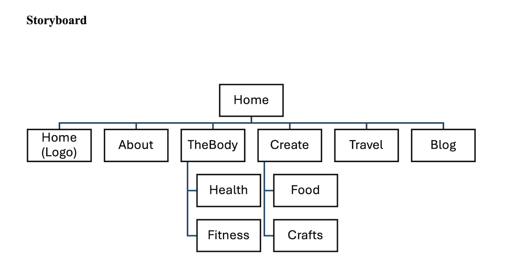
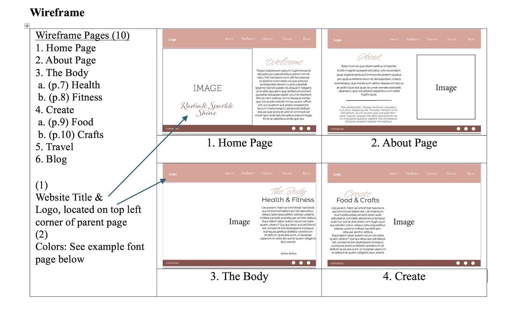
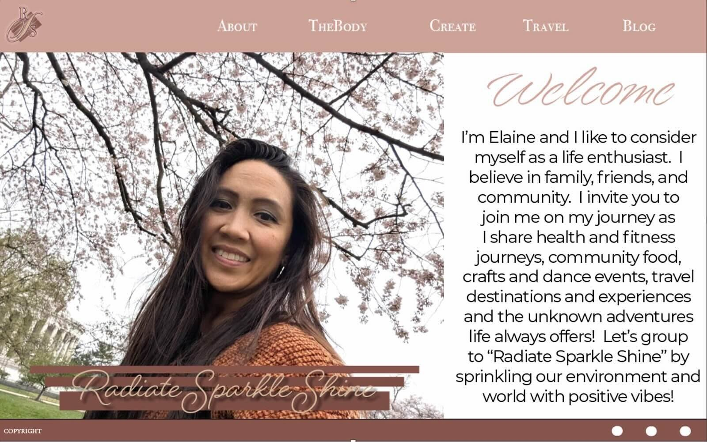

Client UX Strategy & Wireframe Suite — Radiate Sparkle Shine
A comprehensive 10-page website strategy displaying structural command over massive content frameworks and user flows. This case study maps out complex site tracks without falling into navigational confusion.
Navigational Blueprinting & Systems Logic
1. Hybrid Navigation Mapping Architecture
To structure a high-performance content engine across the 10-page Radiate Sparkle Shine suite, I developed a hybrid information architecture map. This strategic skeleton successfully balances Linear page flows (guiding step-by-step scanning across critical corporate updates) with Hierarchical sub-menus. This layout structure allows users to jump directly downward into nested Health, Fitness, Food, and Crafts columns with zero user friction.
2. Systematic Architecture Blueprint Preview
Below is the structural layout blueprint detailing the spatial arrangement mapped onto an industry-standard 17-inch width by 11-inch height ledger print canvas. This framework enforces strict 0.125-inch outer margin systems to ensure flawless balance and alignment across media transitions:






Syllabus Bibliography Verification
Price, E. (2025). Figure 1: Hybrid linear and hierarchical storyboard flow mapping for the Radiate Sparkle Shine website architecture [Unpublished structural map]. Completed academic course assignment for CMST 295 Fundamentals of Digital Design, University of Maryland Global Campus.
Price, E. (2025). Figure 2: Low-fidelity grayscale wireframe layout matrix mapping spatial arrangement constraints on a ledger print canvas [Unpublished design layout blueprints]. Completed academic course assignment for CMST 295 Fundamentals of Digital Design, University of Maryland Global Campus.
Price, E. (2025). Figure 3: Finished high-fidelity digital design schematic prototype for the Radiate Sparkle Shine desktop homepage interface [Digital design prototype]. Mapped onto a 17" x 11" print canvas mesh in Adobe InDesign for CMST 295 Fundamentals of Digital Design, University of Maryland Global Campus.